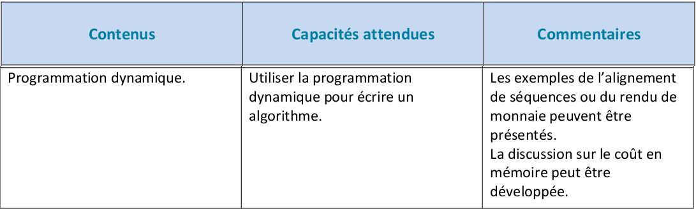
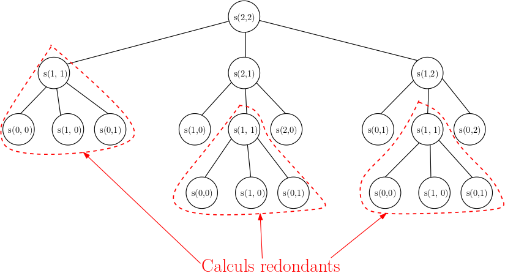
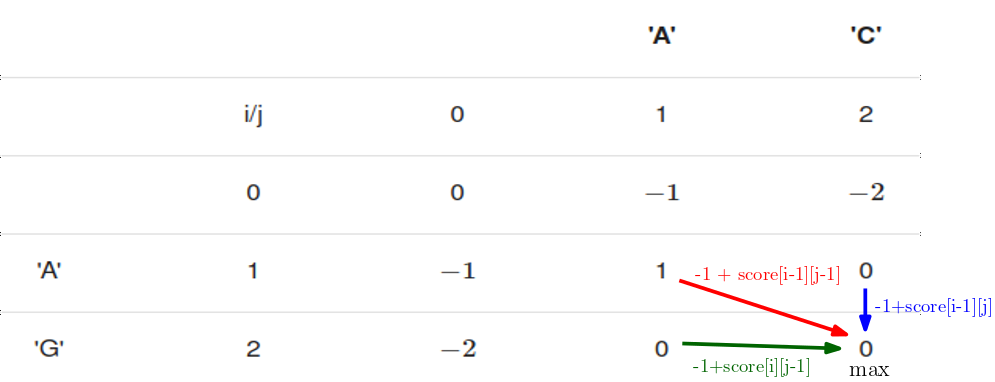

Alignement de séquences (D'après le cours de Frédéric Juinier)⚓︎

Ce cours est mis à disposition selon les termes de la Licence Creative Commons Attribution - Pas d'Utilisation Commerciale - Partage dans les Mêmes Conditions 4.0 International.

Sources et crédits pour ce cours
Pour préparer ce cours, j'ai utilisé :
- le manuel NSI chez Ellipses de Balabonski, Conchon, Filliâtre, Nguyen dont est tiré l'exemple du rendu de monnaie.
- le livre part 3 : greedy algorithms and dynamic programming de Tim Roughgarden dont est tirée la comparaison entre les méthodes de conception d'algorithme programmation dynamique et Diviser Pour Régner.
- le cours de mon collègue Pierre Duclosson pour l'exemple du triangle de nombres
Un problème d'optimisation⚓︎
Point de cours 7 : problème de l'alignement de séquences
Les progrès dans la connaissance du code génétique sont l'une des avancées majeures de la biologie au vingtième siècle. On sait qu'un brin d'ADN est constitué de séquences de nucléotides choisis parmi l'Adénine (codée A), la Thymine(codée T), la Cytosine (codée C) et la Guanine (codée G). On peut donc modéliser une séquence génétique d'ADN par une chaîne de caractères pris dans l'alphabet {A, C, G, T}.
Rapidement, l'informatique et la biologie se sont rencontrées pour constituer la bio-informatique. Le problème de l'alignement de séquences est fondamental en bio-informatique, il consiste à determiner la proximité de deux séquences génétiques. Les motivations sont nombreuses :
- Si on peut rapprocher une séquence génétique d'un génome complexe comme celui de l'homme d'une séquence d'un génome mieux connu, comme celui de la souris, on pourra faire des conjectures sur le rôle joué par cette séquence.
- Si on peut rapprocher des séquences génétiques extraites de deux espèces A et B, on peut conjecturer qu'elles descendent d'un ancêtre commun et reconstituer des arbres phylogénétiques.
- etc ...
Pour mesurer la proximité entre deux séquences génétiques, on les modélise d'abord comme des chaînes de caractères pris dans un alphabet. Ensuite on définit précisément ce qu'est un alignement possible entre deux séquences. Puis on associe à chaque alignement un score. Enfin on détermine sur l'ensemble des alignements possibles le score maximal et un alignement le réalisant. L'algorithme proposé par Needleman et Wunsch en 1970, détermine un alignement global optimal de deux chaînes de caractères et constitue le premier exemple historique d'application de la programmation dynamique en bio-informatique. L'objet de cette partie est la présentation d'une version simplifiée de cet algorithme.
Définition de l'alignement de séquences
Étant donné deux séquences génétiques représentées par les chaînes de caractères, un alignement de ces deux séquences est une façon de faire correspondre les caractères de la première avec ceux de la seconde en insérant éventuellement des trous. Un alignement doit respecter deux contraintes :
- on doit utiliser tous les caractères de chaque séquence et dans le même ordre
- on ne peut pas avoir de correspondance entre deux trous.
Par la suite, on note '_' un trou et on parle de séquence étendue pour désigner la séquence où on a inséré (ou pas) des trous.
Exemple 1 : des alignements
On prend pour séquence 1 : 'ACCCGT' et pour séquence 2 : 'ACCGA'.
-
un alignement possible avec un trou :
Séquence 1 étendue A C C C G T Séquence 2 étendue A C C _ G A -
un alignement impossible car l'ordre des caractères a été modifié pour la séquence 2 :
Séquence 1 étendue A C C C G T Séquence 2 étendue A C G _ C A -
un alignement impossible car deux trous correspondent :
Séquence 1 étendue A C C _ G G T Séquence 2 étendue A C C _ _ G A -
un autre alignement possible avec un trou :
Séquence 1 étendue A C C C G T Séquence 2 étendue A C _ C G A -
un alignement possible avec trois trous :
Séquence 1 étendue A C C C G _ T Séquence 2 étendue A C _ C G A _
Score de Needleman-Wunsch
Une fois qu'on a défini un alignement, on lui associe un score. Nous adopterons les mêmes conventions que dans le manuel NSI de Balabonski, Conchon, Filliâtre, Nguyen, plus simples que dans l'algorithme de Needleman-Wunsch :
- l'alignement de deux caractères identiques donne un point
- l'alignement de deux caractères différents, ce qui inclut l'alignement avec un trou '_', enlève un point
Le score maximal parmi tous les alignements possibles de deux séquences est leur score de Needleman-Wunsch. Le nombre d'alignements possibles croît exponentiellement avec les longueurs des séquences donc une recherche exhaustive par force-brute n'est applicable que pour des entrées de petite taille. Comme pour les problèmes du rendu de monnaie et de la somme maximale dans un triangle, on va chercher une résolution plus efficace avec une méthode de programmation dynamique.
Exemple 2 : calculs de scores
On reprend l'exemple 1 avec pour séquence 1 : 'ACCCGT' et pour séquence 2 : 'ACCGA'.
-
un premier alignement avec son calcul de score :
Séquence 1 étendue A C C C G T Séquence 2 étendue A C C _ G A Points 1 1 1 \(-1\) 1 \(-1\) Le score de cet alignement est de 2.
-
un autre alignement avec son calcul de score :
Séquence 1 étendue A C C C G T Séquence 2 étendue A C _ C G A Points 1 1 \(-1\) 1 1 \(-1\) Le score de cet alignement est aussi de 2.
-
un alignement possible avec deux trous :
Séquence 1 étendue A C C C G _ T Séquence 2 étendue A C _ C G A _ Points 1 1 \(-1\) 1 1 \(-1\) \(-1\) Le score de cet alignement est de 1.
Le score maximal parmi tous les alignements possibles de 'ACCCGT' et 'ACCGA' est \(4-2=2\) car leur plus longue sous-séquence commune est 'ACCG' de longueur \(4\), donc un alignement rapporte au plus 4 points et dans ce cas deux caractères de la séquence la plus longue 'ACCCGT' correspondent à un trou avec une pénalité de \(2\) points.
Exercice 9
On considère les séquences 'AGTACG' et 'ACATAG'.
Question 1
Calculer le score d'un alignement de 'AGTACG' et 'ACATAG' sans trous insérés.
| Séquence 1 étendue | A | G | T | A | C | G |
|---|---|---|---|---|---|---|
| Séquence 2 étendue | A | C | A | T | A | G |
| Points | 1 | \(-1\) | \(-1\) | \(-1\) | \(-1\) | 1 |
Le score de cet alignement est de \(2-4=-2\).
Question 2
On considère l'alignement ci-dessous :
| Séquence 1 étendue | A | G | T | _ | A | C | G |
|---|---|---|---|---|---|---|---|
| Séquence 2 étendue | A | C | A | T | A | _ | G |
Calculer le score de cet alignement.
| Séquence 1 étendue | A | G | T | _ | A | C | G |
|---|---|---|---|---|---|---|---|
| Séquence 2 étendue | A | C | A | T | A | _ | G |
| Points | 1 | \(-1\) | \(-1\) | \(-1\) | 1 | \(-1\) | 1 |
Le score de cet alignement est de \(3-4=-1\).
Question 3
Proposer un alignement avec un trou inséré dans chaque séquence dont le score est supérieur au précédent.
| Séquence 1 étendue | A | G | _ | T | A | C | G |
|---|---|---|---|---|---|---|---|
| Séquence 2 étendue | A | C | A | T | A | _ | G |
| Points | 1 | \(-1\) | \(-1\) | 1 | 1 | \(-1\) | 1 |
Le score de cet alignement est de \(4-3=1\).
Question 4
Quel est le score de Needleman-Wunsch des séquences 'AGTACG' et 'ACATAG' ? Justifier.
- Le seul alignement de \(6\) caractères est celui sans trous dont le score, calculé en question 1, est de \(-2\).
- Un alignement de \(7\) caractères est obtenu en insérant un trou dans chaque séquence. Le nombre maximum de caractères correspondants est celui de la plus longue sous-séquence commune à 'AGTACG' et 'ACATAG', qui est 'ATAG'. Le score d'un tel alignement est de \(4-3=1\) car on a \(4\) caractères correspondants et \(3\) caractères différents.
- Un alignement de \(n \geqslant 8\) caractères ou plus ne peut faire mieux qu'un score de \(4 - (n - 4) = 8 - n \leqslant 0\) car le nombre maximum de caractères correspondants est \(4\), celui de la plus longue sous-séquence commune.
Le score de Needleman-Wunsch des séquences 'AGTACG' et 'ACATAG' est donc 1.
Résolution du problème de l'alignement de séquences par programmation dynamique⚓︎
Point de cours 8 : sous-structure optimale et solution récursive par programmation dynamique
On considère la séquence 1 'GTTAACC' et la séquence 2 'CGTAAC'.
Supposons qu'on dispose d'un alignement de ces deux séquences dont le score est maximal et examinons la dernière colonne de cet alignement. Trois cas sont possibles :
-
Premier cas : Les derniers caractères 'C' et 'C' des deux séquences sont alignés, on marque un point et on doit aligner ensuite les préfixes 'GTTAAC' et 'CGTAA' des deux séquences.
Séquence Premières colonnes Dernière colonne Séquence 1 étendue 'GTTAAC' + trous 'C' Séquence 2 étendue 'CGTAA' + trous 'C' -
Deuxième cas : Le 'C' final de la séquence 1 est aligné avec un trou '_', on perd un point et on doit aligner le préfixe 'GTTAAC' de la séquence 1 avec la séquence 2 complète 'CGTAAC'.
Séquence Premières colonnes Dernière colonne Séquence 1 étendue 'GTTAAC' + trous 'C' Séquence 2 étendue 'CGTAAC' + trous '_' -
Troisième cas : Le 'C' final de la séquence 2 est aligné avec un trou '_', on perd un point et on doit aligner la séquence 1 complète 'GTTAACC' avec le préfixe 'CGTAA' de la séquence 2.
Séquence Premières colonnes Dernière colonne Séquence 1 étendue 'GTTAACC' + trous '_' Séquence 2 étendue 'CGTAA' + trous 'C'
Dans chaque cas on se ramène au calcul du score d'un alignement entre deux séquences qui sont des préfixes des séquences initiales. On peut démontrer par l'absurde comme pour le problème de la somme maximale dans un triangle que ce score est forcément maximal pour ce sous-problème, sinon on pourrait obtenir un meilleur score pour l'alignement global des séquences. De plus dans chaque cas, au moins une des longueurs des deux séquences du sous-problème, est inférieure à la longueur de la séquence dont elle est extraite.
Ainsi une solution au problème de l'alignement de séquences peut s'obtenir à partir de solutions à des sous-problèmes similaires et plus petits. Cette sous-structure optimale est caractéristique de la possibilité d'une résolution par programmation dynamique (Étape 1).
Si on note S le score maximal pour l'alignement des deux séquences, S1 celui du sous-problème du premier cas, S2 celui du sous-problème du second cas et S3 celui du sous-problème du troisième cas, alors on a la relation de récurrence (Étape 2) :
- S = max(1 + S1, \(-1\) + S2, \(-1\) + S3) si dans le premier cas, les caractères se correspondent dans la dernière colonne
- ou S = max(\(-1\) + S1, \(-1\) + S2, \(-1\) + S3) si dans le premier cas, les caractères ne se correspondent pas dans la dernière colonne
En appelant récursivement cette relation de récurrence pour le problème global, on résout des sous-problèmes plus petits et on converge vers un des cas de base où l'une au moins des deux séquences est vide.
Formalisation
Soit seq1 une séquence de longueur n et seq2 une séquence de longueur m.
Pour tous les indices entiers \(i \in [1;n]\) et \(j \in [1;m]\), on note \(s(i, j)\) le score maximal pour un alignement entre le préfixe seq1[:i] de seq1 de longueur \(i\) et le préfixe seq2[:j] de seq2 de longueur \(j\). Le i-ieme caractère de seq1 est seq1[i-1] (car les caractères sont indexés à partir de 0) et le j-ieme caractère de seq2 est seq2[j-1]. La relation de récurrence établie précédemment s'écrit alors :
- \(s(i, j) = max(1 + s(i-1, j-1), -1 + s(i,j - 1), -1 + s(i - 1,j))\) si
seq1[i-1]== seq2[i-1] - \(s(i, j) = max(-1 + s(i-1, j-1), -1 + s(i,j - 1), -1 + s(i - 1,j))\) sinon
Les cas de base sont ceux où l'un des préfixes est vide, avec $i = 0 $ ou \(j = 0\) :
- si \(i = 0\) et \(j = 0\) alors les deux préfixes sont vides et \(s(0, 0) = 0\)
- sinon si \(i = 0\) et $ j \in [1; n]$ alors \(s(0, j) = -j\) car le préfixe
seq2[:j]de longueur \(j\) doit être aligné avecseq1[:0]qui est vide, donc les \(j\) caractères deseq2[:j]sont tous alignés avec des trous ce qui donne un score de \(-j\) - sinon si \(i \in [1; n]\) et $ j = 0$ alors \(s(i, 0) = -i\) car le préfixe
seq1[:i]de longueur \(i\) doit être aligné avecseq2[:0]qui est vide, donc les \(i\) caractères deseq1[:i]sont tous alignés avec des trous ce qui donne un score de \(-i\)
Exercice 10
💻 Saisir ses réponses sur Capytale
Question 1
- Compléter le code de la fonction
meilleur_score_recpour implémenter l'algorithme récursif de résolution du problème de l'alignement de séquences par programmation dynamique. - Construire l'arbre d'appels récursifs de
s(2, 2)oùsest la fonction auxiliaire récursive de calcul de score maximal pour deux séquences de longueur 2 ? Fort de l'expérience des problèmes derendu de monnaie, quelle situation retrouve-t-on ?
A
Z
-
Code :
1 2 3 4 5 6 7 8 9 10 11 12 13 14 15 16 17 18 19 20 21 22 23 24 25 26 27 28 29 30 31 32 33 34 35 36 37 38 39 40
def meilleur_score_rec(seq1, seq2): """ Prend en paramètres deux chaines de caractères seq1 et seq2 Renvoie le meilleur score d'alignement """ def s(i, j): """Fonction récursive auxiliaire Calcule et renvoie score[i][j] """ if i == 0: if j == 0: return 0 else: return -j elif j == 0: return -i else: # premier sous-problème : alignement des derniers caractères des préfixes seq1[:i] et seq2[:j] s1 = s(i - 1, j - 1) # second sous-problème : le dernier caractère de seq1[:i] est aligné avec un trou s2 = s(i, j - 1) # troisième sous-problème : le dernier caractère de seq1[:j] est aligné avec un trou s3 = s(i - 1, j) # formule de récurrence pour le calcul de score[i][j] # sous-cas où les derniers caractères sont identiques dans le premier sous-problème if seq1[i - 1] == seq2[j - 1]: return max(1 + s1, -1 + s2, -1 + s3) # sous-cas où les derniers caractères sont différents else: return max(-1 + s1, -1 + s2, -1 + s3) n = len(seq1) m = len(seq2) return s(n, m) def test_meilleur_score_rec(): assert meilleur_score_rec('AGTACG', 'ACATAG') == 1 assert meilleur_score_rec('GTTAACC', 'CGTAAC') == 2 print("tests réussis") -
L'arbre d'appels récursifs de
s(2, 2)fait apparaître de nombreux calculs redondants comme pour les problèmes de rendu de monnaie et de somme maximale dans un triangle.
On peut estimer que le nombre d'appels récursifs va croître de façopn exponentielle avec les tailles \(n\) et \(m\) des séquences car chaque appel engendre au moins deux nouveaux appels récursifs sur une profondeur égale à la taille maximale des deux séquences. Une implémentation naïve de la solution récursive par programmation dynamique aura une complexité exponentielle, ce qui n'est pas mieux que pour une solution par force brute.
Question 2
- Si on résout le problème d'alignement pour des séquences de longueur \(n\) et \(m\) en calculant
s(n,m), quel nombre de sous-problèmess(i,j)faut-il résoudre avec \(i \in [0;n]\) et \(j \in [0;m]\) ? - Quelle technique utilisée pour les problèmes de rendu de monnaie et de somme maximale dans un triangle permet d'éviter les calculs redondants et de calculer une seule fois les solutions des sous-problèmes ?
- Compléter le code ci-dessous avec cette technique. On a choisi d'initialiser toutes les cases du tableau de mémorisation
scoreavec-infc'est une valeur impossible pour un score maximal, ainsi on peut distinguer les sous-problèmes qui n'ont pas déjà été résolus comme ceux oùscore[i][j] == -inf.
A
Z
- Le nombre de sous-problèmes \(s(i,j)\) à résoudre avec \(i \in [0;n]\) et \(j \in [0;m]\) est \((n + 1) \times (m +1)\).
- La complexité de l'implémentation naïve de la solution récursive par programmation dynamique a une complexité exponentielle par rapport aux tailles \(n\) et \(m\) des séquences, alors que le nombre de sous-problèmes est polynomial. La technique de mémoïsation consiste à enregistrer dans une structure (tableau ou dictionnaire) la solution de chaque sous-problème une fois qu'elle est calculée et d'aller la lire dans cette structure (il faut que la lecture soit en temps constant) quand on en a besoin.
-
Code :
1 2 3 4 5 6 7 8 9 10 11 12 13 14 15 16 17 18 19 20 21 22 23 24 25 26 27 28 29 30 31 32 33 34 35 36 37 38 39 40 41 42 43 44 45 46 47 48 49 50
from math import inf def meilleur_score_rec_memo(seq1, seq2): """ Prend en paramètres deux chaines de caractères seq1 et seq2 Renvoie le meilleur score d'alignement """ def s(i, j): """Fonction récursive auxiliaire Calcule et renvoie score[i][j] """ if score[i][j] == -inf: # cas de base if i == 0: if j == 0: score[i][j] = 0 else: score[i][j] = -j elif j == 0: score[i][j] = -i else: # premier sous-problème : alignement des derniers caractères des préfixes seq1[:i] et seq2[:j] s1 = s(i - 1, j - 1) # second sous-problème : le dernier caractère de seq1[:i] est aligné avec un trou s2 = s(i, j - 1) # troisième sous-problème : le dernier caractère de seq1[:j] est aligné avec un trou s3 = s(i - 1, j) # formule de récurrence pour le calcul de score[i][j] # sous-cas où les derniers caractères sont identiques dans le premier sous-problème if seq1[i - 1] == seq2[j - 1]: score[i][j] = max(1 + s1, -1 + s2, -1 + s3) # sous-cas où les derniers caractères sont différents else: score[i][j] = max(-1 + s1, -1 + s2, -1 + s3) return score[i][j] n = len(seq1) m = len(seq2) # tableau de mémoisation # score[i][j] est le meilleur score d'alignement de seq1[:i] et seq2[:j] score = [[-inf for j in range(m + 1)] for i in range(n + 1)] return s(n, m) def test_meilleur_score_rec_memo(): assert meilleur_score_rec_memo('AGTACG', 'ACATAG') == 1 assert meilleur_score_rec_memo('GTTAACC', 'CGTAAC') == 2 assert meilleur_score_rec_memo('GTAGTAAACGTTCACC', 'CGGTCAGTAAC') == -1 print("tests réussis")
Résolution itérative par programmation dynamique⚓︎
Exercice 11
💻 Saisir ses réponses sur Capytale
Question 1
On reprend l'exemple de l'exercice 9 avec le calcul du score maximal d'alignment pour la séquence seq1 = 'AGTACG' et la séquence seq2= 'ACATAG'.
Formalisation
On considère un tableau score à deux dimensions tel que pour tous \(i \in [0;6]\) et \(j \in [0;6]\), score[i][j] est le score maximal d'alignement des préfixes seq1[:i] et seq2[:j].
La relation de récurrence établie dans le Point de cours 8 peut se reformuler ainsi :
score[i][j] = max(1 + score[i-1][j-1], -1 + score[i][j - 1], -1 + score[i - 1][j])siseq1[i-1]== seq2[i-1]score[i][j] = max(-1 + score[i-1][j-1], -1 + score[i][j - 1], -1 + score[i - 1][j])sinon
Les cas de base sont ceux où l'un des préfixes est vide, avec i == 0 ou j == 0 :
- si
i == 0etj == 0alors les deux préfixes sont vides etscore[0][0] = 0 - sinon si
i == 0etj >= 1alorsscore[0][j] = -j - sinon si
i >= 1etj == 0alorsscore[i][0] = -i

Le score maximal d'alignement des séquences seq1 et seq2 sera contenu dans score[6][6]. Pour le calculer on va procéder du bas (les plus petits sous-problèmes) vers le haut (le problème global) en progressant par index i de ligne et j de colonne croissants.
C'est la version itérative de résolution du problème d'alignement de séquences par programmation dynamique.
Recopier et compléter le tableau ci-dessous.
| 'A' | 'C' | 'A' | 'T' | 'A' | 'G' | |||
|---|---|---|---|---|---|---|---|---|
| i/j | 0 | 1 | 2 | 3 | 4 | 5 | 6 | |
| 0 | 0 | \(-1\) | \(-2\) | \(-3\) | \(-4\) | \(-5\) | \(-6\) | |
| 'A' | 1 | \(-1\) | ||||||
| 'G' | 2 | \(-2\) | ||||||
| 'T' | 3 | \(-3\) | ||||||
| 'A' | 4 | \(-4\) | ||||||
| 'C' | 5 | \(-5\) | ||||||
| 'G' | 6 | \(-6\) |
| 'A' | 'C' | 'A' | 'T' | 'A' | 'G' | |||
|---|---|---|---|---|---|---|---|---|
| i/j | 0 | 1 | 2 | 3 | 4 | 5 | 6 | |
| 0 | 0 | \(-1\) | \(-2\) | \(-3\) | \(-4\) | \(-5\) | \(-6\) | |
| 'A' | 1 | \(-1\) | 1 | 0 | \(-1\) | \(-2\) | \(-3\) | \(-4\) |
| 'G' | 2 | \(-2\) | 0 | 0 | \(_1\) | \(-2\) | \(-3\) | \(-2\) |
| 'T' | 3 | \(-3\) | \(-1\) | \(-1\) | \(-1\) | 0 | \(-1\) | \(-2\) |
| 'A' | 4 | \(-4\) | \(-2\) | \(-2\) | 0 | \(-1\) | 1 | 0 |
| 'C' | 5 | \(-5\) | \(-3\) | \(-1\) | \(-1\) | \(-1\) | 0 | \(-1\) |
| 'G' | 6 | \(-6\) | \(-4\) | \(-2\) | \(-2\) | \(-2\) | \(-1\) | 1 |
On retrouve que le score maximal d'alignement de la séquence seq1 = 'AGTACG' et la séquence seq2= 'ACATAG' est 1.
Question 2
Compléter le code ci-dessous qui implémente cette méthode itérative de résolution par programmation dynamique. Les solutions des sous-problèmes sont mémorisées dans un tableau score à deux dimensions.
A
Z
1 2 3 4 5 6 7 8 9 10 11 12 13 14 15 16 17 18 19 20 21 22 23 24 25 26 27 28 29 30 31 32 33 34 35 | |
Reconstruction d'une alignement optimal⚓︎
Exercice 12
💻 Saisir ses réponses sur Capytale
Dans cet exercice, on met en oeuvre l'étape 3 caractéristique de la programmation dynamique : la construction d'un alignement de deux séquences qui réalise un score maximal.
Comme pour le problème de la somme dans un triangle, on remplit d'abord le tableau score à deux dimensions pour tous les sous-problèmes score[i][j]. Pour cela, on procède par programmation dynamique itérativement ou récursivement avec mémoïsation, comme dans les exercices 10 et 11. Une fois le tableau rempli on le parcourt du haut (i égal à n et j égal à m) vers le bas (les cas de bases avec i ou j égal à 0). On tient à jour une liste alignement de deux chaînes de caractères avec alignement[0] pour l'alignement de la séquence seq1 et alignement[1] pour l'alignement de la séquence seq2.
Question 1
Compléter le code de meilleur_alignement_iter qui prend en paramètres deux séquences sous forme de chaînes de caractères et qui renvoie un couple avec le score maximal d'alignement et un alignement le réalisant, qui est une liste de deux chaînes de caractères.
A
Z
1 2 3 4 5 6 7 8 9 10 11 12 13 14 15 16 17 18 19 20 21 22 23 24 25 26 27 28 29 30 31 32 33 34 35 36 37 38 39 40 41 42 43 44 45 46 47 48 49 50 51 52 53 54 55 56 57 58 59 60 61 62 63 64 65 66 67 68 69 70 71 72 73 74 75 76 77 78 79 80 81 82 83 84 85 | |